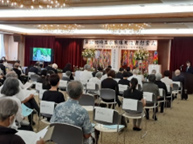
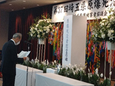
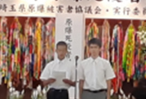

第37回埼玉県原爆死没者慰霊式が開催されました
7月31日、さいたま共済会館（さいたま市浦和区）で、第37回埼玉県原爆死没者慰霊式が、被爆者やご遺族、来賓、実行委員会団体代表者など99人が参加して行われました。
埼玉県原爆死没者慰霊式は｢原爆死没者慰霊の碑｣が建立された1986年から開催され、今年で37回目となりました。第30回からは、会場を別所沼公園から室内施設に移して行われています。被爆者の高齢化にともない、埼玉平和市民5団体懇談会が呼びかけ、埼玉県原爆死没者慰霊式実行委員会を17団体で結成し、埼玉県原爆被害者協議会(以下、しらさぎ会)とともに準備・運営などにあたりました。2020年からは一時的に、新型コロナウイルス感染防止の観点から参列者を限定して開催しています。
式典は、埼玉合唱団の「折り鶴」の合唱から始まり、｢開会のことば｣、埼玉県内の原爆死没者名簿の奉納へと進みました。2021年度に埼玉県内で亡くなられた方90人を含む1,893人の名簿が奉納され、黙とうを捧げました。続いて行われた主催者慰霊のことばでは、しらさぎ会の原明範会長が｢先月21日には被爆者の思いが結実した核兵器禁止条約の第1回締約国会議が開催され、核兵器のない世界への私たちの約束と題するウィーン宣言、ウィーン行動計画が採択されました。これからも戦争の愚かさ、核兵器の残忍さ、非人道性を明らかにして、平和の尊さを訴える活動を継承していきます｣と述べました。来賓のあいさつ、メッセージ紹介に続いて行われた県立熊谷高校の鈴木雄輝さん、井上晴太さんによる平和の誓いでは「核兵器と戦争に反対の声をあげること、そして自由に物が言える社会を守ることが私たちの使命です」と誓いの言葉が述べられました。
被爆の証言では、今年お亡くなりになった堀田シヅヱさん(元しらさぎ会会長)から 聞き書き行動実行委員会が聞き書きした証言を俳優の斉藤とも子さんが朗読しました。献花・折り鶴奉納と進み、最後に平和の願い、核兵器廃絶の思いが、音楽に乗って世界に広がっていくことを祈りながら｢原爆を許すまじ｣を黙唱しました。 当日の映像をYouTubeでご覧いただけます。
https://youtu.be/TFL9DZzDL3U
または、2次元バーコードからご覧ください。


慰霊の言葉を述べる原明範会長

県立熊谷高校2年生鈴木雄輝さん（右）、井上晴太さんによる平和の誓い
来賓として参列された皆様
| 大野元裕埼玉県知事代理 保健医療部疾病対策課 課長 | 根岸佐智子様 |
| 清水勇人さいたま市長代理 総務部総務課 課長 | 細沼 真 様 |
| 自由民主党 衆議院議員 | 牧原秀樹 様 |
| 立憲民主党 参議院議員 | 熊谷裕人 様 |
| 日本共産党 参議院議員 | 伊藤 岳 様 |
| 社会民主党埼玉県連合 | 新島光明 様 |
| 埼玉県議会 埼玉民主フォーラム | 白根大輔 様 |
| 埼玉県議会 日本共産党埼玉県議団 | 前原かづえ様 |
| 埼玉県議会 議員 | 浅野目義英様 |
| さいたま市議会 民主改革さいたま市議団 | 三神尊志 様 |
| 埼玉県立熊谷高等学校 | 教諭 宮嶋 敏 様 教諭 茂木舜一 様 生徒 鈴木雄輝 様 生徒 井上晴太 様 |